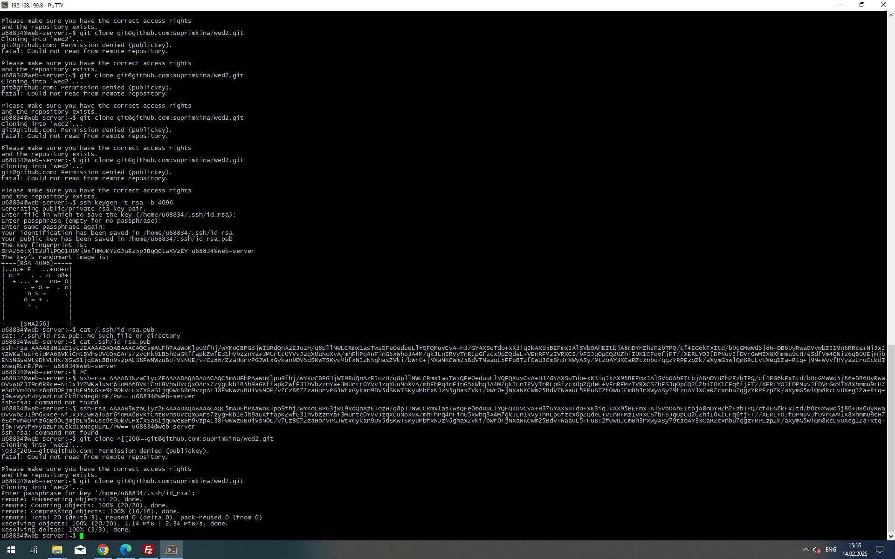
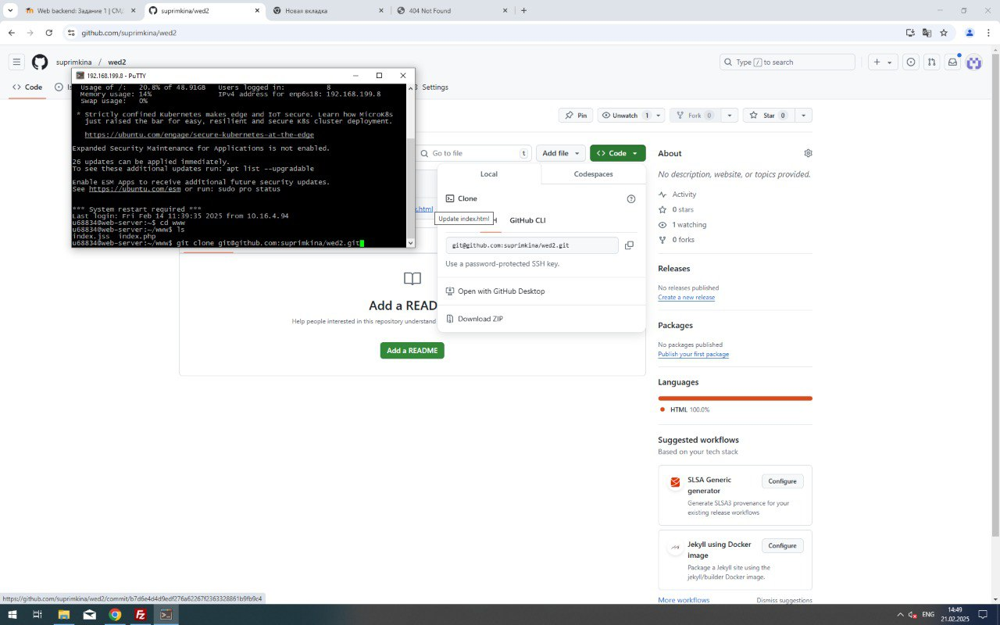

Скачала putty, с помощью него подключилась через ssh к серверу kubsu-dev.ru
Ping к серверу kubsu.ru
Команда ping в PuTTY используется для проверки доступности хоста в сети и измерения времени отклика, отправляя ICMP-пакеты и анализируя полученные ответы.
Ping к серверу kubsu-dev.ru
Nslookup для типа А, сайта kubsu.ru
Если ввести nslookup для типа A подразумевается по умолчанию PuTTY покажет IP-адрес, на котором находится сайт kubsu.ru
Nslookup для типа MX, сайта kubsu.ru
Nslookup для типа А, сайта kubsu-dev.ru
Nslookup для типа MX, сайта kubsu-dev.ru
Whois для сайта kubsu.ru
Whois для сайта kubsu-dev.ru
FileZilla
Создание ключа ssh


подключение к github
gitpull